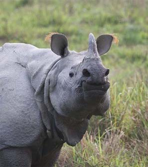

Kaziranga
Grassland safaris and iconic mammals
Kaziranga is the classic big-wildlife experience of Assam: tall elephant grass, wetlands, woodland patches and open floodplains shaped by the Brahmaputra. This is the place for rhinos, elephants, wild buffalo, deer, raptors and jeep safaris through one of India’s most dramatic wildlife landscapes.